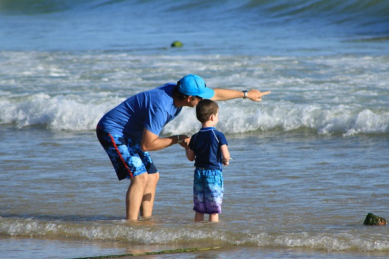

🌿 Deus, Nosso Ambiente Natural
A Analogia da Criação
Observe a narrativa da criação:
- Quando Deus quis criar os peixes, Ele falou com o mar.
- Quando quis criar as árvores, Ele falou com a Terra.
- E quando Ele quis nos criar, Ele falou consigo mesmo.
A Morte pela Desconexão
A dependência da criação em relação ao seu ambiente é total:
- O que acontece quando você tira o peixe do mar? Ele morre.
- O que acontece quando você tira uma árvore do seu solo? Ela morre.
- E o que acontece quando nós nos desconectamos de Deus? Nós morremos.
Conclusão: Deus é a Vida
Deus é o nosso ambiente natural. Fomos criados para vivermos em Deus e só n'Ele a vida existe. A Bíblia diz que devemos estar com a nossa vida encondida com Cristo em Deus.
👉 Reflexão final: Assim como o peixe é dependente da água, a humanidade é dependente da presença divina para existir plenamente.
- Essencialista